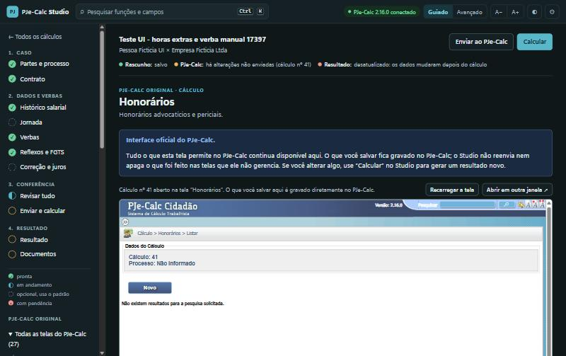
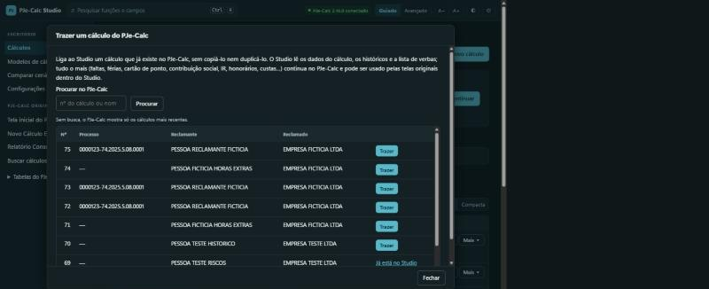

Agentes de IA que operam sistemas
Conecto assistentes como Claude e Codex a programas reais pelo protocolo MCP. O agente lê o documento, preenche telas, confere o resultado e corrige o que o sistema apontar.
→ PJe-Calc Studio: 24 ferramentas MCP
Sou Yarcey Gomes. Tenho experiência de gabinete e construo, eu mesmo, a inteligência artificial e a automação que uso no trabalho jurídico.
Minutei decisões e sentenças em varas cível e criminal. Hoje desenvolvo agentes de IA e sistemas que fazem o trabalho repetitivo do processo, para o tempo do gabinete ir para o que exige análise.

Não paro no prompt. Crio agentes que operam sistemas, escrevo instruções especializadas, automatizo telas e entrego tudo como programa instalável, com conferência humana no centro.
Conecto assistentes como Claude e Codex a programas reais pelo protocolo MCP. O agente lê o documento, preenche telas, confere o resultado e corrige o que o sistema apontar.
Escrevo “skills”: manuais que ensinam a IA a trabalhar como um especialista, com método, fontes obrigatórias e limites claros do que ela pode decidir.
Uso IA para ler sentenças, petições e acordos e transformar o texto em dados estruturados: datas, valores, verbas, critérios, sempre com o trecho de origem.
Análise estatística de decisões para encontrar padrões e aplicar precedentes com consistência, identificando a ratio decidendi e as distinções.
Python, JavaScript e bancos de dados. Automatizo telas de sistemas, gero instalador para Windows, atualização automática e testes, publicados no GitHub.
Produzo vídeos explicativos com roteiro jurídico, narração por IA e animação programada. Clareza para explicar o Direito a qualquer público.
Cada projeto nasceu de um problema da prática jurídica. O principal está publicado, é gratuito e tem código aberto.
Uma interface moderna para o PJe-Calc, o programa oficial de cálculos da Justiça do Trabalho. Com um assistente de IA conectado, você entrega a sentença e ele cria o cálculo, preenche as telas oficiais, calcula e confere o resultado com o documento.
Vídeo de apresentação · 1min48s
roteiro, narração e animação por mim


Análise estatística de decisões judiciais para extrair padrões decisórios e orientar a gestão de processos com dados.
Ensina a IA a elaborar, liquidar e auditar cálculos trabalhistas com memória por competência, fontes, reflexos e encargos.
Biblioteca de trechos jurídicos personalizados para montar peças e minutas com velocidade e rigor técnico.
Clientes, processos, previdenciário e agenda de prazos e audiências, com as pastas de cada processo sincronizadas no disco.
Ajusta PDFs aos limites do PJe antes do protocolo, direto no navegador, sem enviar o documento para a internet.
Guia de 50 páginas sobre estilo, estrutura e técnica argumentativa na prática forense, para escrever com mais técnica, agilidade e persuasão.
Série de vídeos sobre direitos com roteiro jurídico e fontes, narração por IA e animação programada em código.
Um jogo sobre a corrida contra os prazos processuais: “o prazo não espera”. Interface, animação e lógica feitas do zero.
Uma Vara Única recebe de tudo: cível, criminal, família, infância, execução fiscal. Estas são ferramentas que sei desenvolver para esse volume. Escolha uma para ver como funciona.
A IA prepara. A decisão e a assinatura são sempre do magistrado.
Dados sensíveis só em ferramentas autorizadas pelo Tribunal, conforme a Resolução CNJ 615/2025.
Cada informação extraída aponta a página dos autos ou o precedente de origem.
Minutas conferidas contra o art. 489, § 1º, do CPC antes de ir ao juiz.
Conheço o processo dos dois lados da mesa: a minuta que vai ao juiz e a peça que chega a ele.
Universidade da Amazônia (UNAMA), 2020–2025
Disponibilidade imediata para atuação presencial e mudança para Porto dos Gaúchos/MT.